My mother introduced me to the concept of multipotentiality early on in life, and has been an ever present encouraging and inspiring presence for me to broaden my horizons beyond the academic realm. I have grown up dabbling in an array of activites, from horse riding, to animation & digital design, to choral conducting.
I am told that I became the world's youngest voice over artiste to handle an English script, when I professionally lent my voice to UNICEF at the age of three, for their organisational film regarding children's activities across the globe. I have since lent my voice to other organizations like Aptech and The Bishop's School.
My free time is also enjoyed through a good game of tennis, or some time on the ice rink. My skating dream is to perform the Axel jump someday.
I also dabble in writing, photography, singing, playing my violin & piano, and dancing. That was a mouthful. More on those below!
I am proudly Twice Exceptional. Feel free to reach out if you'd ever like to chat about Neurodiversity!
Reading has been a big part of my life. Many of my childhood years were spent in remote parts of my country, with no children my age to befriend. I found my companionship within the bound pages of books instead, and spent endless hours captive to the world of imagination.
Eventually, this stirred a gentle passion towards writing something myself. I ventured forth more than a decade ago, starting multiple fiction stories with great gusto that would quickly peter out, leaving me with a series of unfinished works. As the years rolled on, my writing adapted to my hectic lifestyle, evolving into short vignettes about my experiences and thoughts on life. I have shortlisted a sampling of some thoughts I have enjoyed penning down below. I hope you enjoy reading them and much as I did in writing them!
I am an amateur nature photographer, and can never resist the opportunity to capture a nice shot. These are a few of my favourite photos, and you can find more here.
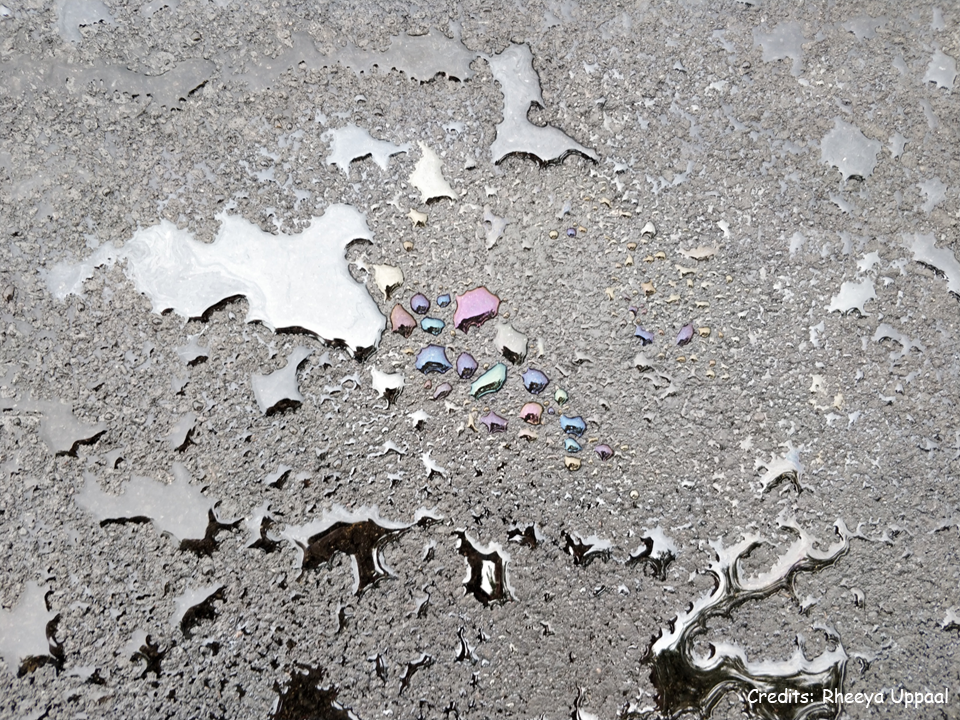 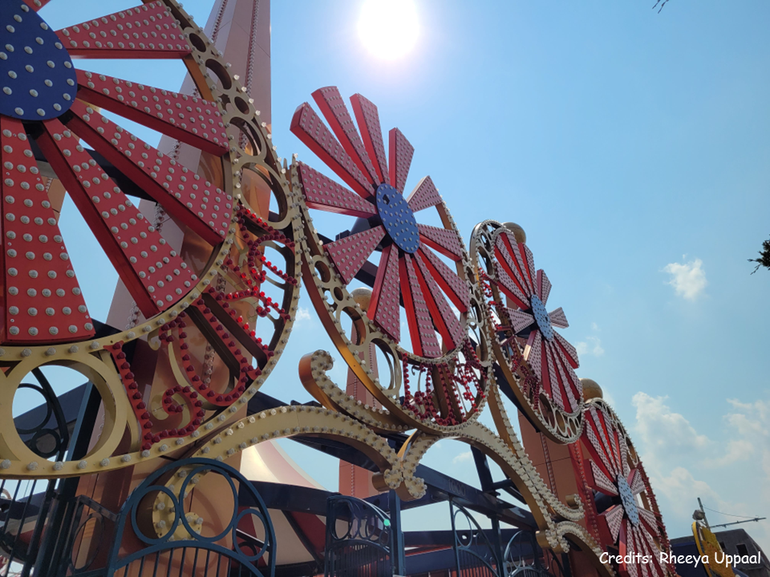 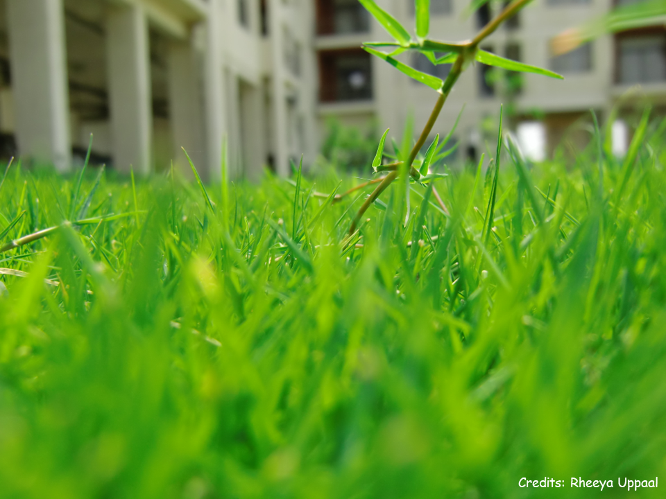 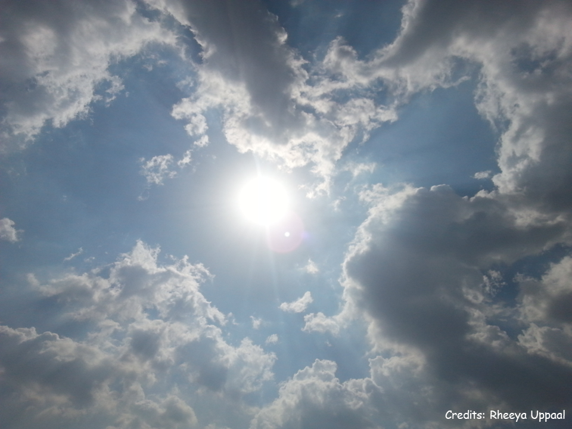 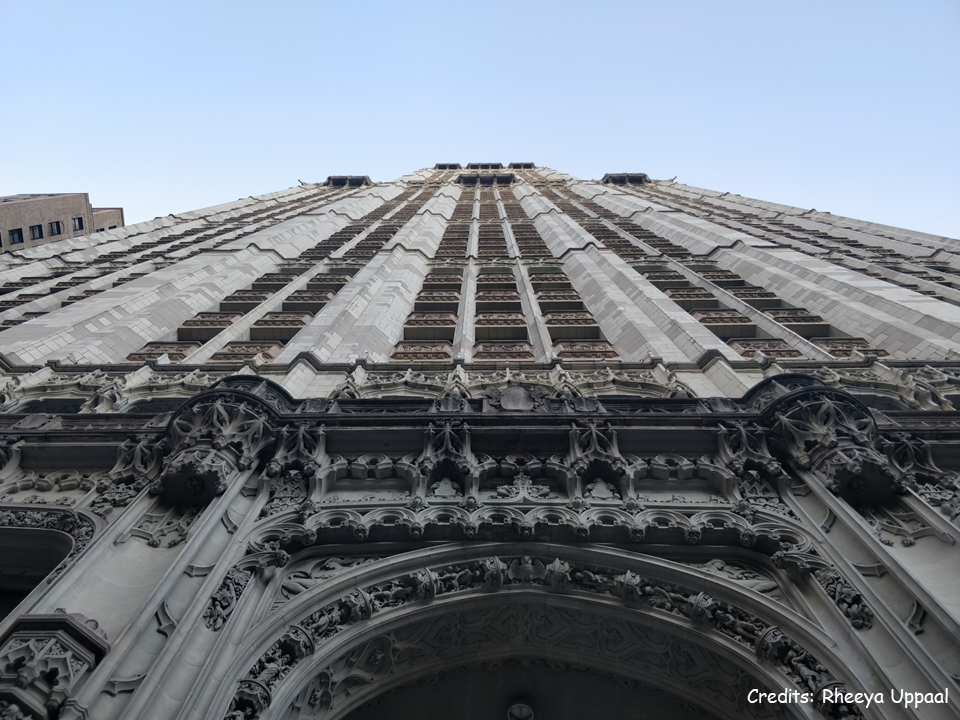 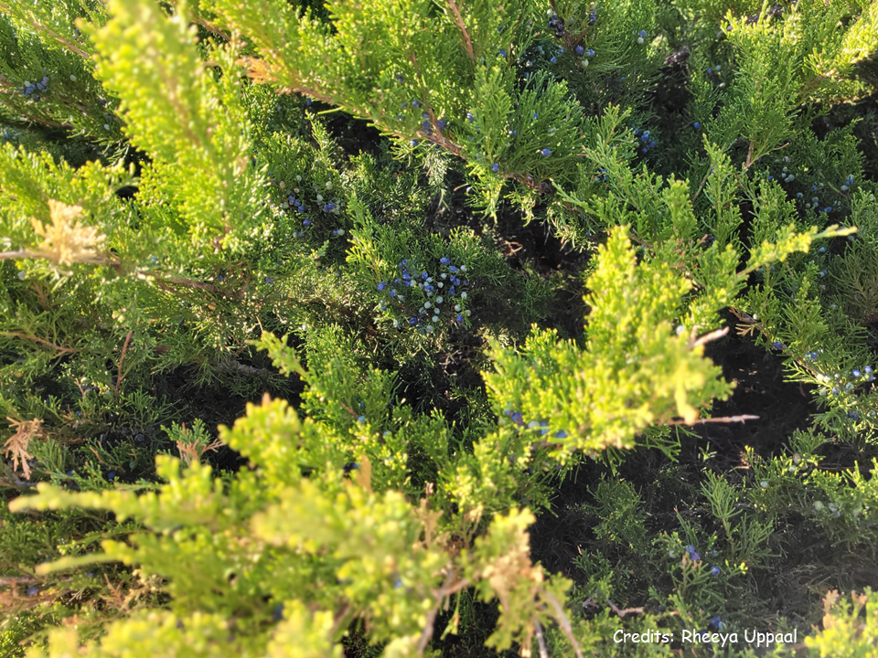
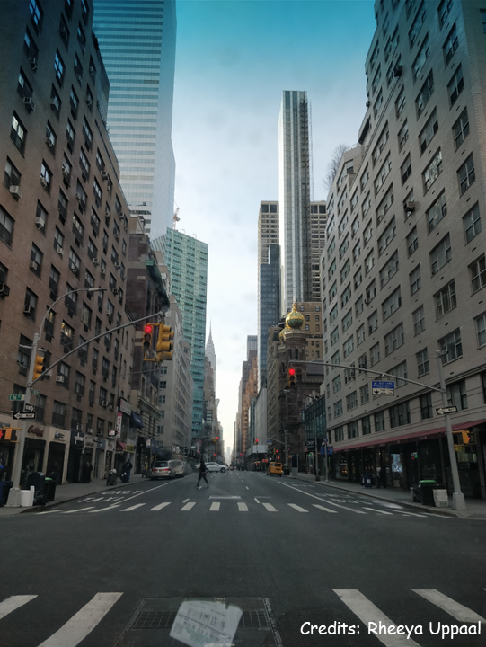 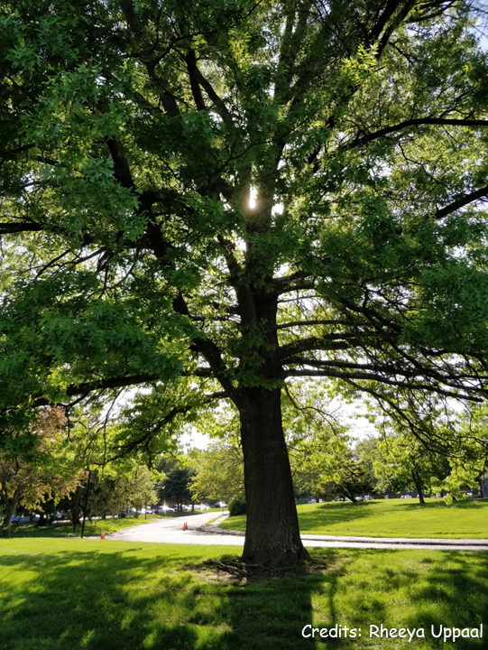 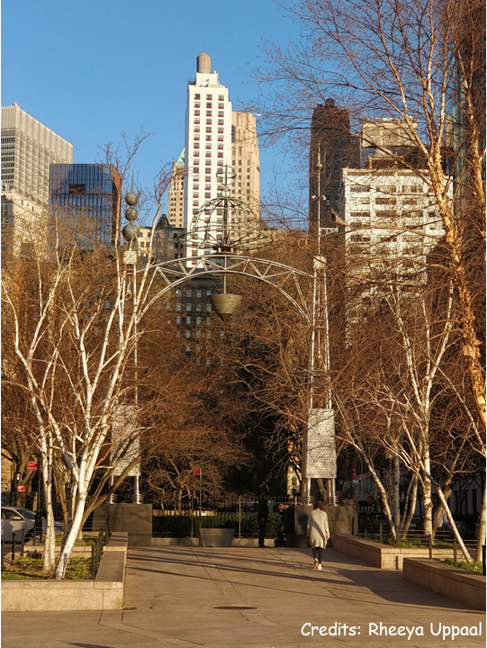 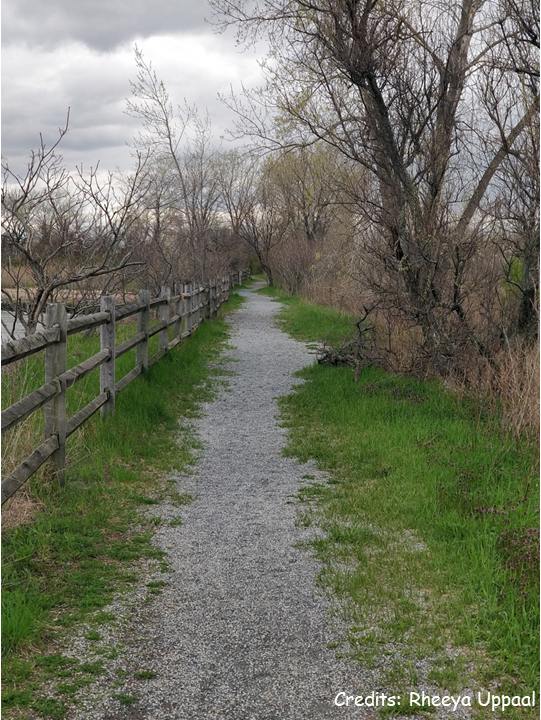 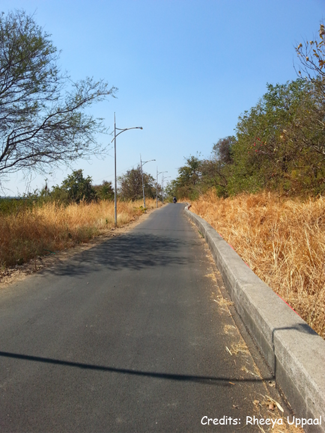
Music and dance have been well ingrained parts of my culture, and spontaneously breaking out into group song during our family gatherings is by no means rare. I myself sing, play the violin and piano (albeit, poorly) and have been trained in Jazz dance and Bharatnatyam (though I like trying other styles too). Oh, and I also rap.
Here are some songs I have really enjoyed singing...
...and here are some other (potnetially questionable) musical adventures...
Most recently, I've really taken to dance - ever since realizing that a hobby can be turned into the minimal physical fitness requirement of a PhD student.